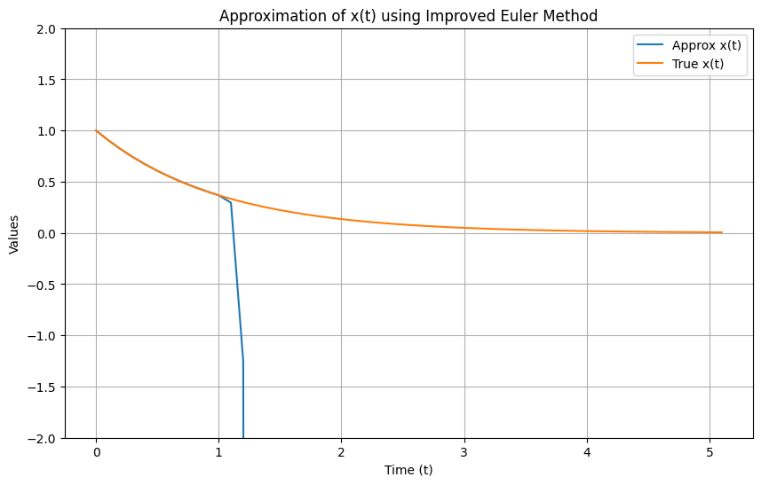

Table of Contents
Numerical Methods For Higher Order Equations
Higher-Order Equations and First-Order Systems
In the last chapter we learned how to use the geometric interpretation of
the solution of a first order equation as the integral curve following a
slope field to compute numerical approximations to initial value problems,
even when we couldn't find the exact solution. The situation is more
complicated for higher order equations because now instead of just
dealing with slope, $dy/dx$, the presence of terms like $d^2y/dx^2$ means
a geometric analysis would include more involved concepts like curvature.
Fortunately we can avoid this by transforming higher-order equations into
first-order systems, and then sticking to the methods we already know.
Consider the equation $y''+3y'+2y=0$. We can convert this to a pair of
first-order equations by introducing $v=dy/dx$. Then $dv/dx=d^2y/dx^2$ and
the equation becomes
$$ \begin{align}
y'' + 3y' + 2y = 0& \\
\frac{dv}{dx} + 3v + 2y = 0& \\
\frac{dv}{dx} = -3v-2y&
\end{align} $$
With this we see the second-order equation $y''+3y'+2y=0$ is the same as
the first-order system
$$ \begin{align}
\frac{dy}{dx}&=v \\
\frac{dv}{dx} &= -3v-2y
\end{align} $$
If you have initial values in the original equation, you just convert them
to initial values for the system by making the same substitution.
This technique of converting a second-order equation to a
first-order system works for general equations, not just linear equations.
If we have the initial value problem
$\displaystyle\frac{d^2y}{dx^2}=f(x,y,y')$, $y(0)=y_0$,
$y'(0)=y_1$, then this can be converted to the first-order system
$$ \begin{align}
\frac{dy}{dx}&=v,\qquad &y(0)=y_0 \\
\frac{dv}{dx}&=f(x,y,v),\qquad &v(0)=y_1
\end{align} $$
We can also convert higher-order equations to first order systems by
making multiple substitutions. Consider the third-order equation
$y'''+y''-2y'+xy=e^x$. Letting $v=dy/dx$ and $w=dv/dx=d^2y/dx^2$ we get
$$ \begin{align}
\frac{dy}{dx}&=v \\
\frac{dv}{dx}&=w \\
\frac{dw}{dx}&=e^x-xy+2v-w
\end{align} $$
The technique of using
Picard iteration to show that a "nice" first-order initial value problem
has a solution applies to first order systems as well.
You just have to make the integral in the Picard iteration
vector-valued. You can see the proof of the following theorem in Math 540.
Theorem
If $f(x,t_0,t_1,\ldots,t_n)$ and all its first partial derivatives are
continuous in
$(-h,h)\times(y_0-h,y_0+h)\times(y_1-h,y_1+h)\times\cdots\times(y_{n-1}-h,y_{n-1}+h)$
for some $h>0$, then there is an $\epsilon>0$ such that the initial value
problem
$$
\frac{d^ny}{dx^n}=f(x,y,y',\ldots,y^{(n-1)}),\qquad
y(0)=y_0,\quad y'(0)=y_1,\quad\ldots\quad, y^{(n-1)}=y_{n-1}
$$
has a unique solution for $x\in(-\epsilon,\epsilon)$ (note this statement
asserts both the existence and uniqueness of the solution to the initial
value problem).
Euler's Method
Just as for first-order equations, we often won't be able to find explicit
solutions to higher-order equations and will want to find numerical
approximations. We do this by converting the higher-order equations
into first-order systems and then using the same techniques as we had in
the last chapter. The difference is now we will apply these to all
the different first-order equations in the system at once. We begin with
Euler's method. As before, this method is well suited to implementation on
a spreadsheet. We will use the example
$$
y'' + 3y'+ 2y = 0,\qquad y(0)=1,\quad y'(0)=0.
$$
Open Excel (or your favorite spreadsheet if you are working on your own
computer). We'll start by labeling the columns to keep track of what
goes where. Enter x into cell A1, dy/dx into
cell
B1, dv/dx into cell C1, y into cell D1,
v=y' into cell E1,
and h into cell H1. Next
put
the initial values and step-size into the appropriate starting spots with
0 in cell A2, 1 in cell D2, 0 in
cell E2, and 0.1
in cell H2. Then put in the formulas with =A2+$H$2 in cell
A3, =E2 in cell B3, =-3*E2-2*D2 in cell C3,
=D2+$H$2*B3 in cell D3, and =E2+$H$2*C3 in cell
E3.
You now have the x
column set to add the step size
h as you move down each row, the dy/dx and
dv/dx columns to
compute the slopes based on the starting x, y,
and v=y'
values, and the y and v=y' columns to add
h times
dy/dx and h times dv/dx to the
previous values for y and v respectively. Now click and drag to select
cells
A3..E3 and then click on the small square at the lower right of the box
around those cells and drag it down for about 20 rows or so to copy
the formulas down and automate the calculations.
 Note that the approximate values of the solution function $y(x)$ are
contained in the
Note that the approximate values of the solution function $y(x)$ are
contained in the y column which is column D, not the
last column in the tableau. So here we see $y(0.5)\approx 0.8533$ for this
initial value problem.
Since this is a nice constant coefficient linear homogeneous equation, we
can find the exact value is $y=2e^{-x}-e^{-2x}$ so we will be able to
check our work.
In cell F1 of the spreadsheet enter y
exact and in cell G1 enter rel error (which stands for
relative error). Then in cell F2 enter
=2*exp(-A2)-exp(-2*A2) and
in cell G2 enter =(F2-D2)/F2. It will be convenient to
right-click on cell G2 and Format Cells as Percentage since relative error
is a percent. Now click and drag to select cells F2 and G2 and drag those
formulas down. This will show you how accurate the approximation produced
by Euler's method is.
 Euler's method isn't particularly accurate, though it works well enough in
this problem with a relative error of about 1%. We can improve
the approximation by taking smaller steps. If you change cell H2 to
Euler's method isn't particularly accurate, though it works well enough in
this problem with a relative error of about 1%. We can improve
the approximation by taking smaller steps. If you change cell H2 to
0.05 to cut the step size in half, you find that the error in
the value of $y(0.5)$ has been cut to about 0.43%. Of course you had
to take 10 steps of size 0.05 to get to 0.5 while it only took 5 steps of
size 0.1. So you do twice as much work but you cut the error roughly in
half. This is the standard pattern for Euler's method, just as it was
for first-order equations.
Naturally, you can use this technique to handle other equations. The only
thing you need to edit is the formula for dv/dx in column
C. Do be sure to copy the edited formula down the whole column. And you don't have
to use a spreadsheet. It is easy to program Euler's method into your favorite
programming language. And carrying out Euler's method by hand is straightforward if tedious.
On a test where you may have to carry out a couple of steps by hand, I find it easiest to keep track
of what goes where if I organize it in columns just as in a spreadsheet.
Stiff Equations and More Accurate Methods
When talking about first-order equations, we next considered the improved
Euler's method. And you can adapt the improved Euler's method to higher-order
equations, just as we adapted Euler's method above. And just as for first-order
equations, the improved Euler's method is a second-order method, which means
for nice equations and small enough step sizes, halving the step size cuts the
error by a factor of 1/4. However, the notion of nice equations and picking the
right step size can get rather complicated. Consider the initial value
problem
$$
\frac{d^2x}{dt^2}+101\frac{dx}{dt}+100x = 0,\qquad x(0)=1,\quad x'(0)=-1
$$
This is simple constant-coefficient linear differential equation, and the solution
to the initial value problem is $x = \exp(-t)$. Yet if we approximate the solution
with the improved Euler's method using a step size of 0.1 we get the following

Things seem to be going fine, and then suddenly everything falls apart. The difficulty
here is that the roots of $D^2+101D+100$ are $-1$ and $-100$. As round-off error builds
up over the first few steps, we will get slightly away from our true solution of $\exp(-t)$.
But then that large factor of $-100$ will grab that small round-off error and magnify it,
eventually causing the approximate solution to diverge badly from the true solution.
Note that even though the general solution to the differential equation is $x(t) = C_1\exp(-t) + C_2\exp(-100t)$,
so all the solutions converge to 0, the approximate solution heads off to $-\infty$.
Equations like this are called "stiff." Note that there isn't a precise definition of the
term stiff, because these sorts of issues can come up in various ways which makes it hard to
be precise about when things may go wrong.
Now if you shrink the step size enough, you can avoid this issue in this example. But shrinking the
step size means more steps and that means more roundoff error. So you need to be careful about just
always cutting down the step size. The solution is to use a method like the Runge-Kutta-Fehlberg, which
automates the selection of the step-size, and can adjust it dynamically so the step size is small where
it needs to be, but can grow when it is safe so that you avoid wasting time and building up roundoff
error by taking too many steps. You can see the code for an implementation of the RKF2(3) algorithm
if you look at the Python version of Geometric Interpretations (Slope Fields) unit in chapter 1. But you
don't have to program this yourself. It is easier to just call the routine from a standard library, such as the
scipy.integrate.solve_ivp function from the SciPy library. However, this routine, like most such routines, expects
the equation to be provided in the form of a first-order system. So you will still have to translate higher-order
equations to first-order equations yourself (though now most AI assistants can do that for you too).
Exercises
- Why do you only have to adjust the column(s) for dv/dx and not for
dy/dx or anything else to change your spreadsheet to approximate a
different equation?
- Approximate $y(2)$ for the linear homogeneous initial value problem
$$
\frac{d^2y}{dx^2}-\frac{dy}{dx}-6y=0,\qquad
y(0)=1,\quad y'(0)=0
$$
using Euler's method with $h=0.1$ and $h=0.05$. How does cutting the
step-size in half in Euler's method affect the relative error for this
problem?
- Approximate $y(2)$ for the linear inhomogeneous initial value problem
$$
\frac{d^2y}{dx^2}+4\frac{dy}{dx}+3y=e^x,\qquad
y(0)=1,\quad y'(0)=0
$$
using Euler's method with $h=0.1$ and $h=0.05$. How does cutting the
step-size in half in Euler's method affect the relative error for this
problem?
- Approximate $y(2)$ for the third-order linear initial value problem
$$
\frac{d^3y}{dx^3}+2\frac{d^2y}{dx^2}-\frac{dy}{dx}-2y=0,\qquad
y(0)=1,\quad y'(0)=0,\quad y''(0)=-1
$$
using Euler's method with $h=0.1$ and $h=0.05$. How does cutting the
step-size in half in Euler's method affect the relative error for this
problem?
- Approximate $y(0.5)$ for the non-linear initial value problem
$$
\frac{d^2y}{dx^2}-2y\frac{dy}{dx}=0,\qquad
y(0)=1,\quad y'(0)=1
$$
using Euler's method with $h=0.1$ and $h=0.05$. The exact solution is
$y(x)=\displaystyle\frac{1}{1-x}$ so $y(0.5)=2$. How does cutting the
step-size in half in Euler's method affect the relative error for this
non-linear problem.
- (TRICKY)
Approximate $y(1.1)$ for the non-linear initial value problem
$$
\frac{d^2y}{dx^2}-2y\frac{dy}{dx}=0,\qquad
y(0)=1,\quad y'(0)=1
$$
using Euler's method with $h=0.1$. The exact
solution is
$y(x)=\displaystyle\frac{1}{1-x}$ so $y(1.1)=-10$. In this case the
approximation is badly off. How small a step-size do you need to pick to
get the relative error under 10%.
©1994-2026 Andrew G. Bennett